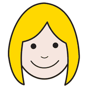

Modulo 2, fondamenti
Universal Design for Learning
Un quadro per rendere l'apprendimento accessibile, equo e significativo per ogni studente, progettando la flessibilità fin dall'inizio.
flessibilità
by design
Che cos'è l'UDL
 imparare
imparare tutti
tutti diverso
diversoL'Universal Design for Learning è un modello educativo basato sulla ricerca neuroscientifica. Nasce dal design universale dell'architetto Ronald Mace (anni '70), portato nella scuola dal CAST (Center for Applied Special Technology) negli anni '90.
L'obiettivo: curricoli che si adattano agli studenti, non il contrario.
il cosa
Principio 1: più modi di rappresentare
 guardare
guardare ascoltare
ascoltare leggere
leggere toccare
toccareGli studenti percepiscono e comprendono le informazioni in modi diversi: disabilità sensoriali, lingue e culture diverse richiedono più porte d'ingresso ai contenuti.
- Concetti presentati con testo, immagini, audio, video e infografiche.
- Glossari, parole chiave e traduzioni per studenti con DSA o con altra lingua madre.
- Mappe e schemi per rendere visibili le relazioni tra i concetti.
Non esiste un formato ideale: offrire varietà è offrire equità.
il come
Principio 2: più modi di agire ed esprimersi
 scrivere
scrivere parlare
parlare disegnare
disegnare costruire
costruire- Scelta del formato: testo, presentazione, audio o progetto pratico; ognuno sceglie come mostrare ciò che sa.
- Strumenti di supporto: correttore, predittore, sintesi vocale abbassano le barriere senza abbassare gli obiettivi.
- Navigazione flessibile: ambienti digitali con percorsi alternativi e interfacce personalizzabili.
il perché
Principio 3: più modi di coinvolgere
 voglia
voglia scegliere
scegliere
contento insieme
insiemeLa motivazione è individuale: c'è chi ama la novità e chi la routine, chi il gruppo e chi il lavoro da solo. Il coinvolgimento non si impone, si progetta.
- Collegare i contenuti agli interessi e a situazioni reali.
- Offrire scelte su attività e approfondimenti.
- Favorire autovalutazione e autoregolazione in un clima positivo.
I benefici
tuttiimpararecontentoPer gli studenti
- Accesso reale al curricolo
- Più motivazione
- Autonomia e fiducia in sé
- Meno stigma: il supporto è per tutti
Per il docente di sostegno
- Una didattica inclusiva fin dalla progettazione
- Meno adattamenti a posteriori, meno isolamento
- Lettura più chiara dei bisogni della classe
- Collaborazione più efficace con il team